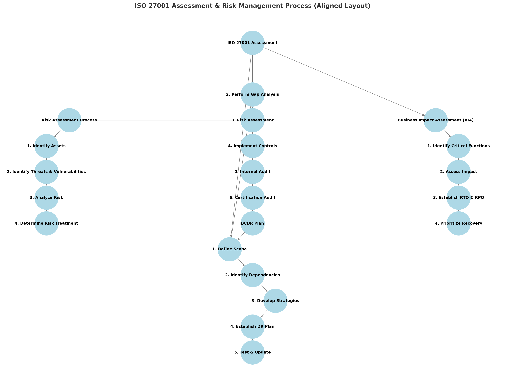

How to Conduct an Assessment Against ISO/IEC 27001

1. Define the Scope
Identify which parts of your organization, systems, and assets will be covered by ISO 27001.
2. Perform a Gap Analysis
Compare current security practices with ISO 27001 requirements and identify non-conformities.
3. Risk Assessment and Treatment
- Conduct a risk assessment (identify threats, vulnerabilities, likelihood, and impact).
- Define a risk treatment plan (accept, mitigate, transfer, or avoid risks).
4. Develop and Implement Controls
Implement controls based on Annex A of ISO 27001:
- Organizational controls
- People controls
- Physical controls
- Technological controls
5. Conduct Internal Audits
Perform internal audits to verify compliance and effectiveness.
How to Structure a Risk Assessment
1. Identify Information Assets
Identify data, systems, infrastructure, personnel, and third parties based on criticality and sensitivity.
2. Identify Threats and Vulnerabilities
Consider external threats (cyberattacks, natural disasters) and internal vulnerabilities (weak passwords, misconfigurations).
3. Analyze Risk (Likelihood & Impact)
Use a risk matrix to score risks:
| Likelihood \ Impact |
Low |
Moderate |
High |
Critical |
| Rare |
1 |
2 |
3 |
4 |
| Possible |
2 |
3 |
4 |
5 |
| Likely |
3 |
4 |
5 |
6 |
4. Determine Risk Level & Treatment
Risks can be categorized as Acceptable, Mitigated, Transferred, or Avoided.
How to Conduct a Business Impact Assessment (BIA)
1. Identify Critical Business Functions
List essential processes and determine dependencies (systems, vendors, key personnel).
2. Assess the Impact of Disruptions
- Financial Impact
- Operational Impact
- Reputational Impact
- Legal & Compliance Impact
3. Establish Recovery Time & Point Objectives (RTO & RPO)
- RTO: Maximum allowable downtime.
- RPO: Maximum tolerable data loss.
Developing a Business Continuity & Disaster Recovery (BCDR) Plan
1. Define Objectives & Scope
Define which threats are covered and what systems, locations, and departments are included.
2. Identify Critical Functions & Dependencies
Use the Business Impact Assessment (BIA) results to identify key systems, suppliers, data, and facilities.
3. Develop Business Continuity Strategies
- Backup and failover strategies
- Redundant IT infrastructure
- Alternative communication channels
4. Establish a Disaster Recovery Plan
- Define Incident Response Procedures.
- Assign roles and responsibilities.
- Define steps for data recovery and alternative work arrangements.
5. Test & Update the BCDR Plan
- Tabletop Exercises (walkthroughs).
- Simulation Testing (mock cyberattack).
- Lessons Learned sessions to update the plan.
How I Can Help You
I can assist in:
- ISO 27001 assessments (Gap analysis, internal audits, risk assessments).
- Developing risk assessment frameworks (templates, risk matrices).
- Creating Business Impact Assessments (BIA) and risk treatment plans.
- Developing Business Continuity & Disaster Recovery (BCDR) Plans.
- Reviewing security documentation and improving compliance efforts.